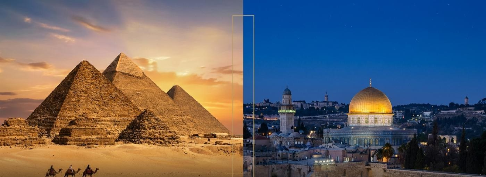
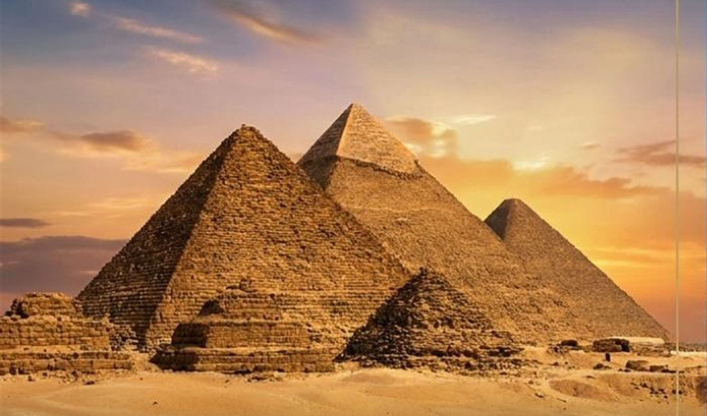
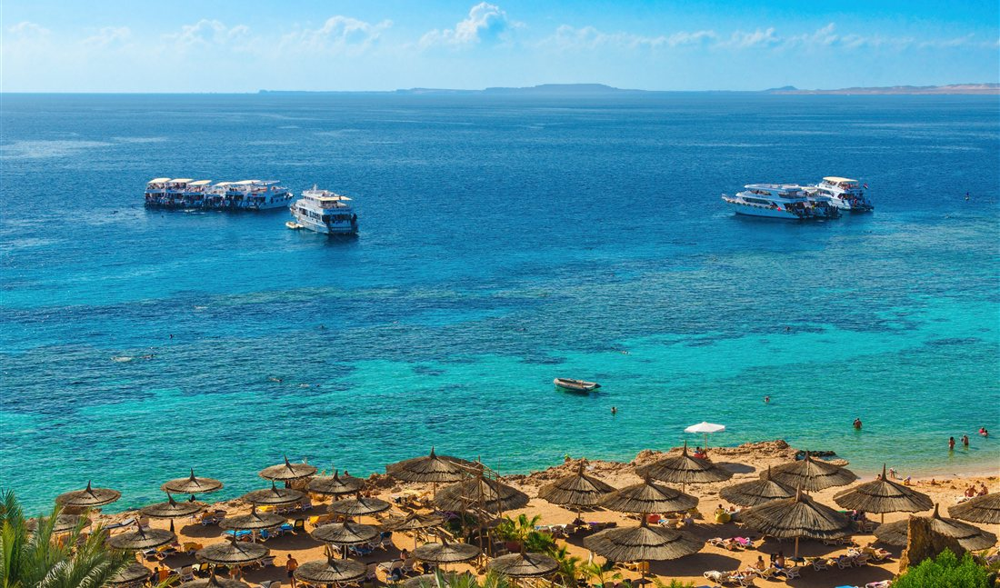
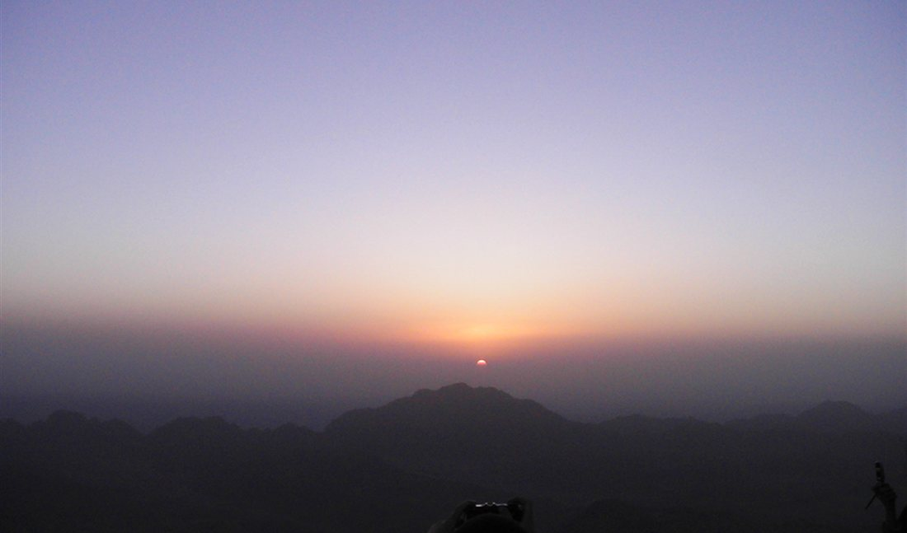
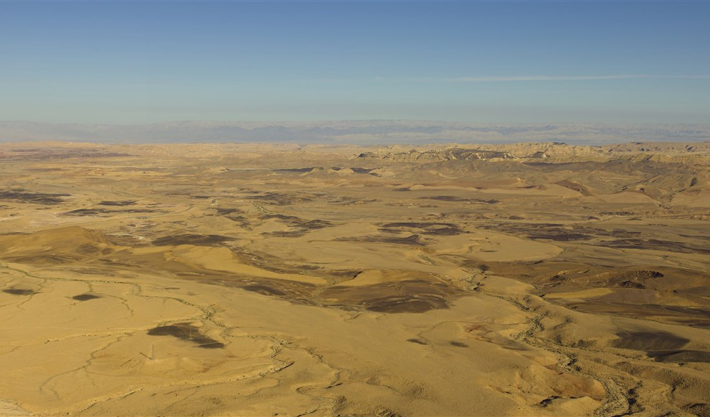
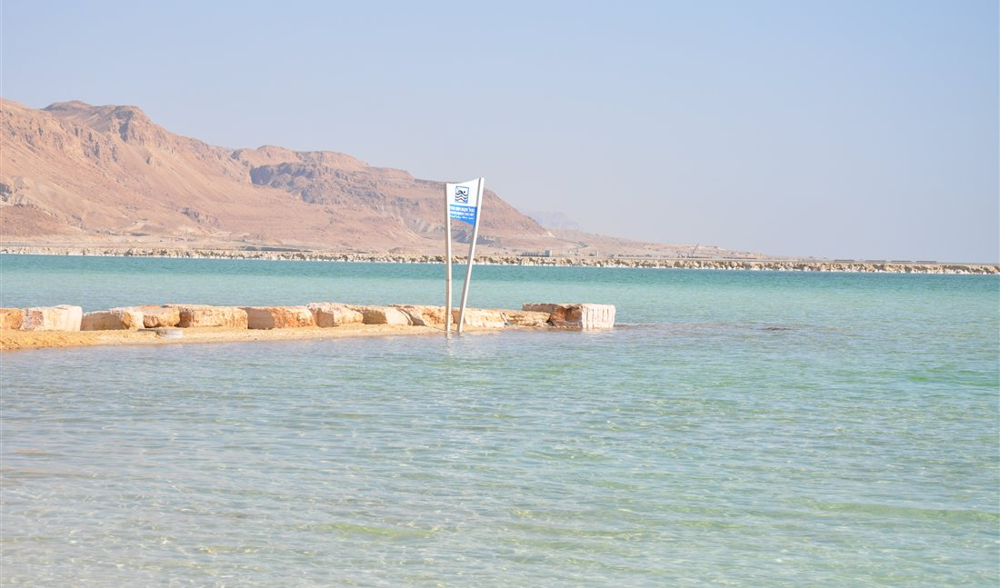
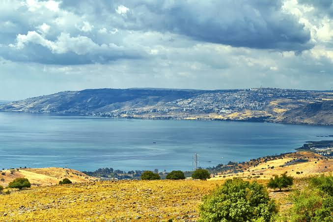
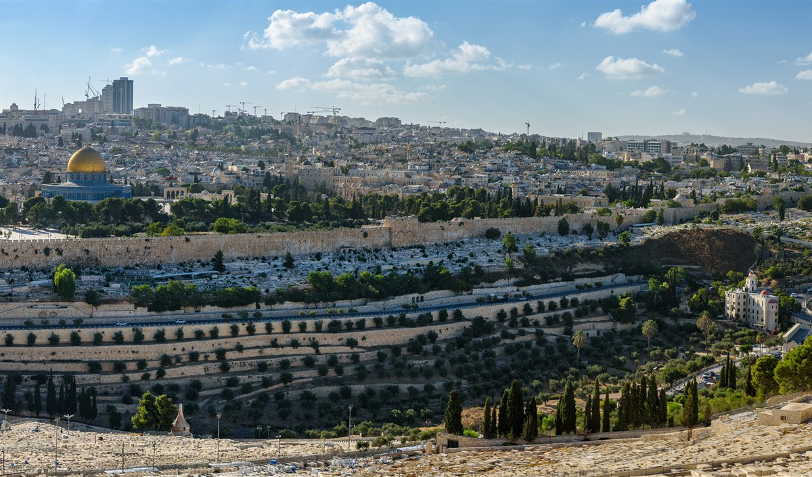

Uma imersão milenar
Das Pirâmides de Gizé e do Grande Museu Egípcio aos caminhos de Jerusalém.

GRUPO DRA. JANE KRUGER · MARÇO 2027
Da grandiosidade das pirâmides às ruas sagradas de Jerusalém. História, fé e descobertas em uma viagem pensada em cada detalhe.
Descubra a jornada Duas nações milenares. Uma experiência extraordinária.O EXTRAORDINÁRIO ESTÁ NO CAMINHO
Contemplar o nascer do sol no Monte Sinai. Navegar pelo Nilo. Percorrer cenários bíblicos e encontrar silêncio diante da imensidão do deserto.
O Grupo Dra. Jane reúne destinos históricos, momentos de conexão e conforto para viver essa travessia do Egito a Israel.
Das Pirâmides de Gizé e do Grande Museu Egípcio aos caminhos de Jerusalém.
Hospedagens selecionadas, com destaque para uma noite no Isrotel Beresheet.
Guias especializados, traslados dedicados, assistência ao grupo e serviço de maleiros.
DO CAIRO A JERUSALÉM
Uma seleção de experiências do roteiro de 13 dias. Cada parada revela uma nova paisagem, uma história e um jeito de se conectar.

Pirâmides, Esfinge e a coleção de Tutancâmon no Grande Museu Egípcio. À noite, jantar a bordo de um cruzeiro pelo Nilo, com música folclórica e dança típica.

Praias de águas cristalinas e tempo para relaxar. No deserto, passeio de quadriciclo pelas dunas e um jantar beduíno sob o céu estrelado.

Uma caminhada nas primeiras horas da manhã para contemplar o amanhecer em um dos cenários mais simbólicos da jornada.
A subida é destinada a participantes fisicamente aptos.

Travessia da fronteira em Taba, expedição de Jeep 4×4 pela cratera, Parque Timna e Tel Beersheva. Uma noite especial no Isrotel Beresheet.

A fortaleza de Massada e as cavernas de Qumran encontram o descanso nas águas ricas em minerais do Mar Morto.

Mar da Galileia, Nazaré, Monte Carmelo e ruínas romanas de Cesareia. Lugares que aproximam a história das paisagens de hoje.

Três noites para absorver as camadas de história, a espiritualidade e a atmosfera singular da cidade. O encontro final de uma travessia inesquecível.
UM GRUPO, MUITAS DESCOBERTAS
Uma experiência compartilhada em um grupo de até 20 participantes, atravessando paisagens e lugares que fazem parte da história e da fé.
Deixe espaço para contemplar, conversar e construir memórias ao longo de cada etapa.
Escolha sua experiênciaCONFORTO EM CADA ETAPA
Hotéis de 4 e 5 estrelas selecionados para acompanhar o ritmo da jornada.
Uma noite em Mitzpe Ramon, na borda da cratera do deserto do Negev.
NEGEV · 1 NOITEPARA APROVEITAR CADA MOMENTO
Meia-pensão com café da manhã e jantar diários. Jantar a bordo no Nilo e jantar beduíno no deserto.
Ônibus de luxo com Wi-Fi e ar-condicionado, traslados dedicados e assistência grupal contínua.
Guias fluentes e especializados, entradas previstas no roteiro, fones para os tours e kit Amiel.
Seguro de viagem e serviço de maleiros em hotéis e aeroportos, para 1 mala e 1 bolsa por participante.
ESCOLHA COMO VIVER ESSA JORNADA
Duas opções para participar do mesmo grupo. Valores por pessoa, em ocupação dupla.
R$ 44.580,00
Pacote terrestre + passagem aérea saindo de Guarulhos (GRU).
R$ 35.980,00
Pacote terrestre para quem prefere organizar o aéreo separadamente.
Valores por participante em quarto duplo, conforme o material da viagem. Consulte condições para acomodação individual. Taxas governamentais e extras, como o formulário ETA Israel, não estão inclusos. As condições de pagamento são apresentadas na plataforma de reserva.
ANTES DE EMBARCAR
A viagem está prevista para março de 2027, com duração de 13 dias. O material não informa os dias exatos de saída e retorno; consulte essa informação antes de concluir sua reserva.
A opção completa inclui o pacote terrestre e passagem aérea saindo de Guarulhos (GRU). O Land Tour inclui apenas o pacote terrestre, sem passagem aérea.
Sim. Os valores são por participante, considerando acomodação dupla. Para quarto individual, consulte as condições específicas.
O material destina a subida aos participantes fisicamente aptos. Consulte a organização sobre o nível de esforço e a programação para quem não realizar a caminhada.
Sim. O material informa seguro de viagem incluído. Consulte a organização para detalhes da cobertura e da apólice.
EGITO & ISRAEL · MARÇO DE 2027
Novas fotografias com recorte e redimensionamento para esta página: Sharm El-Sheikh — Serhio Magpie, CC BY 4.0; Monte Sinai — Sinan R. Wolf-Gazo, uso livre autorizado; Makhtesh Ramon — Andrew Shiva / Wikipedia, CC BY-SA 4.0, licença também aplicável ao recorte; Mar Morto — Jorge Láscar, CC BY 2.0. Jerusalém — Joe deSousa / Mustang Joe, CC0, recorte e redimensionamento. Demais imagens: acervo do projeto.